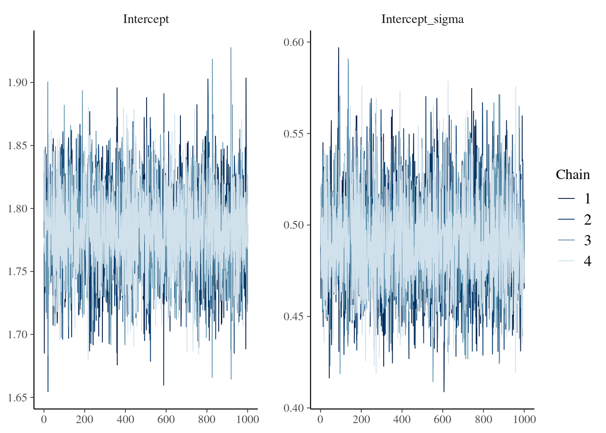

Frequently asked questions and tips
faq.RmdHere we provide tips for working with the epidist package, and answers to “frequently” asked questions.
If you have a question about using the package, please create an issue and we will endeavour to get back to you soon!
The code block below is provided to facilitate reproduction of this script, if required!
library(epidist)
set.seed(1)
meanlog <- 1.8
sdlog <- 0.5
obs_time <- 25
sample_size <- 200
obs_cens_trunc <- simulate_gillespie(seed = 101) |>
simulate_secondary(
meanlog = meanlog,
sdlog = sdlog
) |>
observe_process() |>
filter_obs_by_obs_time(obs_time = obs_time)
obs_cens_trunc_samp <-
obs_cens_trunc[sample(seq_len(.N), sample_size, replace = FALSE)]
data <- as_latent_individual(obs_cens_trunc_samp)
fit <- epidist(data, seed = 1)I would like to work with the samples output
The output of a call to epidist is compatible with typical Stan workflows.
We recommend use of the posterior package for working with samples from MCMC or other sampling algorithms.
library(posterior)
draws <- posterior::as_draws_df(
fit,
variable = c("Intercept", "Intercept_sigma")
)
head(draws)## # A draws_df: 6 iterations, 1 chains, and 2 variables
## Intercept Intercept_sigma
## 1 1.8 -0.74
## 2 1.8 -0.82
## 3 1.7 -0.77
## 4 1.8 -0.67
## 5 1.7 -0.85
## 6 1.8 -0.67
## # ... hidden reserved variables {'.chain', '.iteration', '.draw'}How can I assess if sampling has converged?
The output of a call to epidist is compatible with typical Stan workflows.
We recommend use of the bayesplot package for sampling diagnostic plots.
library(bayesplot)
bayesplot::mcmc_trace(fit, pars = c("Intercept", "Intercept_sigma"))
I’d like to run a simulation study
We recommend use of the purrr package for running many epidist models, for example as a part of a simulation study.
We particularly highlight two functions which might be useful:
-
purrr::map(and other similar functions) for iterating over a list of inputs. -
purrr::safelywhich ensures that the function called “always succeeds”. In other words, if there is an error it will be captured and output, rather than ending computation (and potentially disrupting a call topurrr::map).
For an example use of these functions, have a look at the epidist-paper repository containing the code for Park et al. (2024).
(Note that in that codebase, we use map as a part of a targets pipeline.)
How did you choose the default priors for epidist?
brms provides default priors for all parameters.
However, some of those priors do not make sense in the context of our application.
Instead, we used prior predictive checking to set epidist-specific default priors which produce epidemiological delay distribution mean and standard deviation parameters in a reasonable range.
For example, here are summary statistics for the distributions on the delay distribution mean and standard deviation, as implied by the following prior distributions on the brms lognormal mu and sigma parameters
\[
\mu \sim \mathcal{N}(2, 0.5^2), \\
\sigma \sim \mathcal{N}(0, 0.5^2).
\]
set.seed(1)
fit_ppc <- epidist::epidist(
data = data, family = brms::lognormal(), sample_prior = "only", seed = 1
)
pred <- predict_delay_parameters(fit_ppc)
summary(pred$mean)## Min. 1st Qu. Median Mean 3rd Qu. Max.
## 2.000e+00 9.000e+00 1.400e+01 5.599e+09 2.400e+01 2.240e+13
summary(pred$sd)## Min. 1st Qu. Median Mean 3rd Qu. Max.
## 0.000e+00 2.000e+00 3.000e+00 1.592e+09 5.000e+00 6.369e+12Note that even with these quite restricted prior distributions, there are still some very large samples of the delay mean and standard deviation (which arguably are not plausible a-priori)!